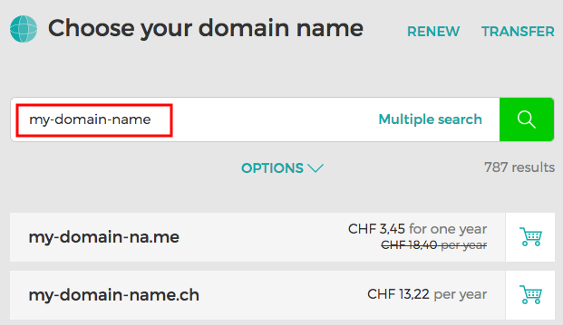
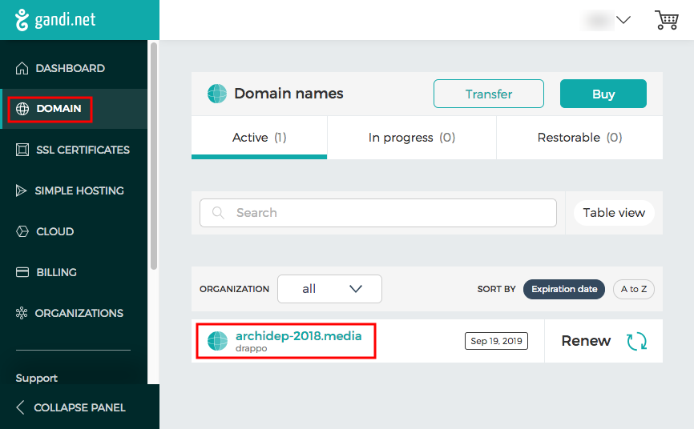
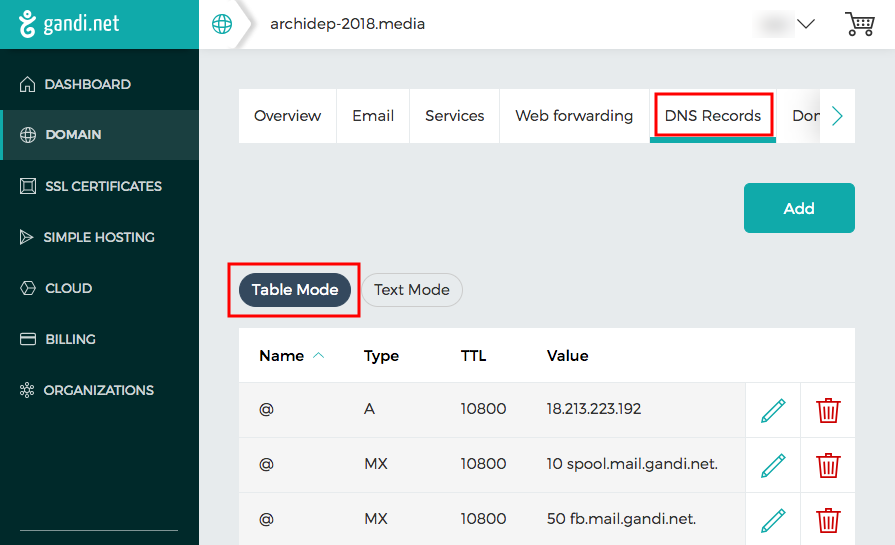
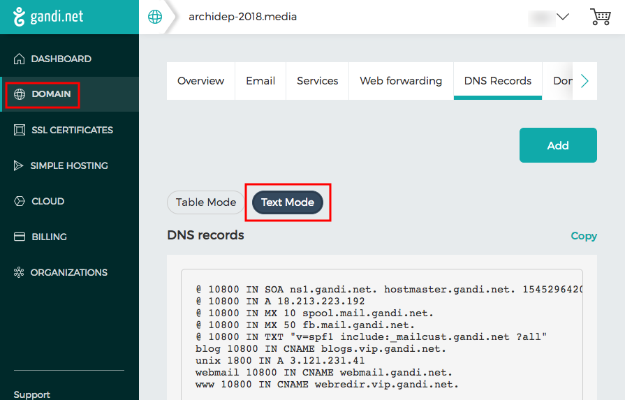
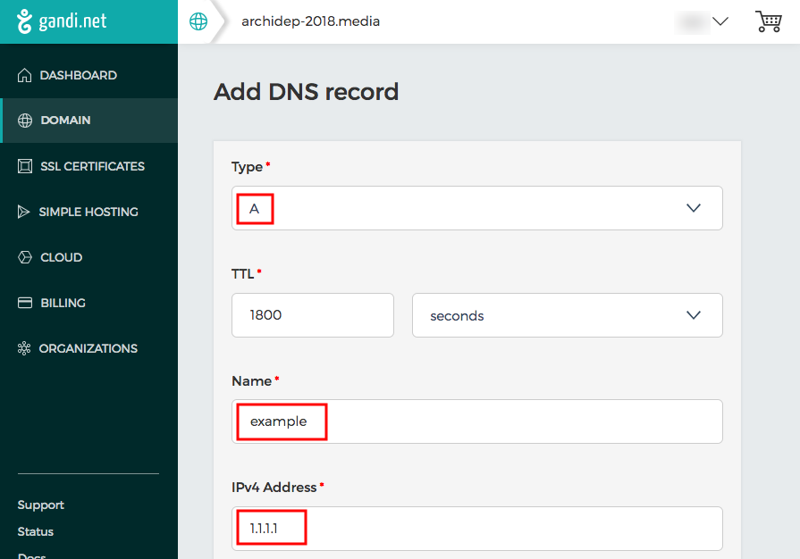

Domain Name System (DNS)
Learn the basics of the Domain Name System (DNS) and configure a domain name for your server with Gandi.net.
You will need
- A server with a public IP address
- A Gandi account that is the administrator or technical contact for a domain
Recommended reading
DNS zone
A DNS zone is a subset of the domain name space for which administrative responsibility has been delegated to a single manager.
DNS zone file
As the manager of a DNS zone, you can modify the DNS zone file, a text file which describes that zone. It contains mappings between domain name and IP addresses and other resources, in the form of resource records.
A resource record is described by one line in the following format:
name ttl record class record type record data
The meaning of each field is:
name- Subdomain name (or@for the domain itself).ttl- Time during which DNS resolution of this record should be cached.record class- Namespace of the record information, usuallyINfor the Internet.record type- Type of record.record data- Record data (depending on the record type).
DNS record types
There are multiple record types. These are some of the most common:
| Type | Description | Function |
|---|---|---|
A |
Address record | Maps a domain name to an IPv4 address. |
AAAA |
IPv6 address record | Maps a domain name to an IPv6 address. |
CNAME |
Canonical name record | Alias of one name to another (e.g. www). |
MX |
Mail exchange record | Maps a domain name to a list of message transfer agents. |
SOA |
Start of authority | Authoritative information about the zone, e.g. primary name server & email of the domain administrator. |
TXT |
Text record | Arbitrary machine-readable data. |
DNS record example
Let’s look at a real example which you might find in a zone file:
name ttl record class record type record data
@ 1800 IN A 18.213.200.101
Assuming this is the zone file for the domain example.com,
here is how to read that record:
- It is an Internet record (
IN). - The
@name indicates that it concerns the domainexample.comitself. - It is an
Arecord, meaning that it mapsexample.comto the IPv4 address18.213.200.101. - It defines a cache time of 1800 seconds (30 minutes) during which clients will not perform DNS resolution again if they have the mapping already.
DNS subdomain record example
Let’s look at another example:
name ttl record class record type record data
blog 300 IN A 3.120.180.32
Assuming this is the zone file for the domain example.com,
here is how to read that record:
- It is an Internet record (
IN). - It concerns the subdomain
blog.example.com. - It is an
Arecord, meaning that it mapsblog.example.comto the IPv4 address3.120.180.32. - It defines a cache time of 300 seconds (5 minutes) during which clients will not perform DNS resolution again if they have the mapping already.
Managing DNS on Gandi.net
Buying a domain name
Most web hosting companies like Gandi allow you to easily check whether a domain name is available, i.e. whether there is already a manager for that subset of the DNS hierarchy, or if you are free to buy it for yourself.
Check out their shop to see if your dream domain name is available.

Configuring a domain
Once you have bought a domain name, you access its management interface from your account:

Configuring the domain’s DNS zone
Gandi offers many services such as email accounts or SSL certificates. The one that interests us is the management of the domain’s DNS zone:

By default, Gandi displays the DNS zone in a human-readable table.
Seeing the raw DNS zone text
Advanced users can also see and edit the real DNS zone file:

Adding a DNS record
The interface allows you to very easily add a DNS record.
For example, this screenshot shows how to add an example subdomain pointing to the IP address 1.1.1.1:
